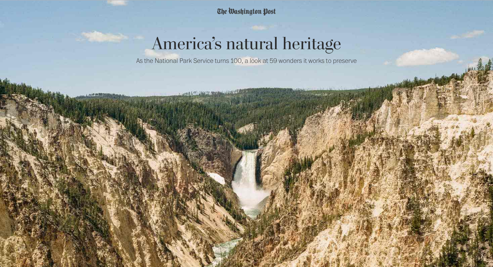
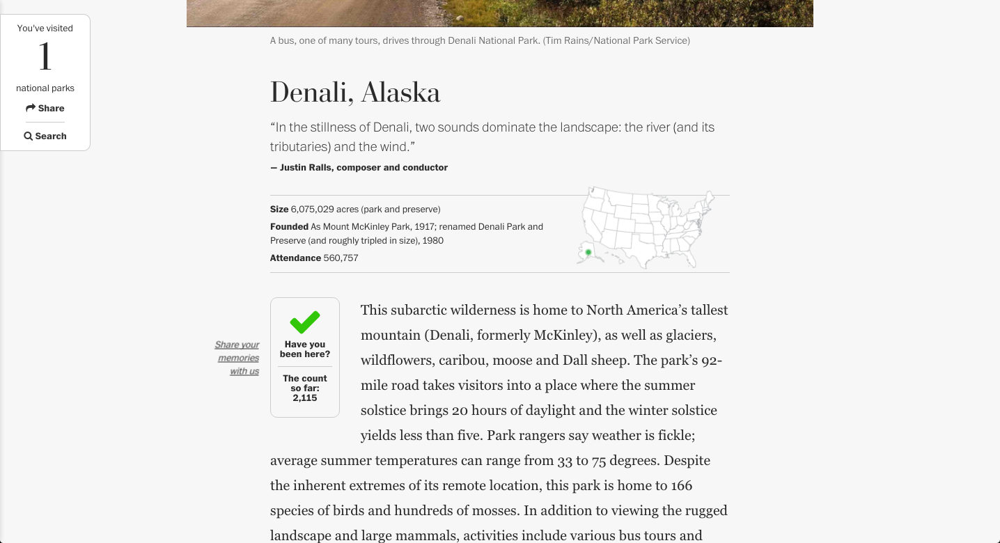

Matthew Callahan
Cross-platform designer and art director at The Washington Post.
Centennial of the National Park Service
Design and development. In anticipation of the centinneal we created an experience where users can record which parks they’ve visited and could share their memories and experiences from the parks. View full project

